Welcome to Mphys_project’s documentation!¶
Indices and tables¶
Modules¶
planet |
Object to store planet orbital properties. |
solar_system |
Simulates the Solar System. |
1. Planet¶
Object to store planet orbital properties.
-
class
planet.planet(Name=”, Period=None, e=None, a=None, i=None, Omega=None, pi=None, l=None, Mass=None, n=None, k=None, Q=None, r=None)¶ Object to store planet orbital properties.
Parameters: - Name (str) – The name of the planet.
- a (float) – The semi-major axis in AU.
- e (float) – The eccentricity of the orbit.
- i (float) – The inclination of the orbit in degrees.
- Omega (float) – The longitude of the ascending node in degrees.
- pi (float) – The longitude of the periapsis in degrees.
- Mass (float) – The mass of the planet in Earth masses.
- r (float) – The radius of the planet in meters.
- n (float) – The orbital angular frequency in degrees per year.
- k (float) – The Love number of degree 2 of the planet.
- Q (float) – The tidal quality factor of the planet.
2. Solar_System¶
Simulates the Solar System.
-
solar_system.calculate_laplace_coeff(alpha, j, s)¶ Calculates the Laplace coeffecient given by
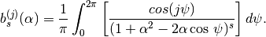
Parameters: - alpha (float) –
- j (float) –
- s (float) –
Returns: The value of the Laplace coefficient.
-
class
solar_system.solar_System(starMass, starRadius, planet_data_file)¶ Stores the mass and radius of the Sun. Also stores the properties of the orbiting planets.
Parameters: - starMass (float) – The mass of the Sun in solar masses.
- starRadius (float) – The radius of the Sun in solar radii.
- planet_data_file (str) – A data file containing planet orbital properties.
-
add_planets(planet_data_file)¶ Create planet objects using
planet()and adds each planet to a list.Parameters: planet_data_file (str) – A data file containing planet orbital properties. Returns: A list of planet objects.
-
components_of_ecc_inc(scaled_eigenvector, eigenvalue, phase, t, eq_id)¶ Calculates the vertical and horizontal components of the eccentricity and inclination for all times.
Parameters: - scaled_eigenvector (numpy array) – The scaled eigenvector of the frequency matrix.
- eigenvalue (numpy array) – The eigenvalues of the frequency matrix.
- phase (numpy array) – The phase shift.
- t (numpy array) – The times to calculate the ertical and horizontal components of the eccentricity and inclination at.
- eq_id (str) – Can be ‘h’, ‘k’, ‘p’, or ‘q’
Returns: An array containing the values of the equation of motion at all time.
Note
The vertical and horizontal components of the eccentricity and inclination are given by
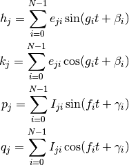
where 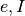 are the scaled eigenvectors and 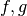 are the eigenvalues of A and B respectively.
See also
-
find_all_scaling_factor_and_phase(eigenvectors_of_A, eigenvectors_of_B)¶ Calculates the scale factors 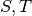 of the eigenvectors and the phases, 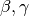.
Parameters: - eigenvectors_of_A (numpy array) – The normalised eigenvectors of the frequency matrix A.
- eigenvectors_of_B (numpy array) – The normalised eigenvectors of the frequency matrix B.
Returns:  (numpy array) - Scaling factor for the eigenvectors of A.
(numpy array) - Scaling factor for the eigenvectors of A. (numpy array) - Phase shift for 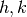
(numpy array) - Phase shift for 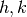 (numpy array) - Scaling factor for the eigenvectors of B.
(numpy array) - Scaling factor for the eigenvectors of B. (numpy array) - Phase shift for 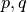
(numpy array) - Phase shift for 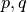
-
frequency_matrix(matrix_id, J2=0, J4=0)¶ Calculates the frequency matrix with the following correction terms included:
- Oblateness of the central body.
- General Relativity (For ‘A’ only).
- Eccentricity damping (For ‘A’ only).
Parameters: - J2 (float) – First zonal gravity coefficient.
- J4 (float) – Second zonal gravity coefficient.
- matrix_id (str) – Can be ‘A’ or ‘B’.
Returns: The frequency matrix, A or B as defined below.
Note
If ‘A’
![A_{jj} = n_{j} & \left [ \frac{3}{2}J_{2} \left ( \frac{R_{\star}}{a_{j}} \right)^{2} - \frac{9}{8}J_{2}^{2} \left ( \frac{R_{\star}}{a_{j}} \right)^{4} - \frac{15}{4}J_{4}^{2} \left ( \frac{R_{\star}}{a_{j}} \right)^{4} \vphantom{\sum _{k\neq}} \right. \\
& \left. + 3\frac{a_{j}^{2}n_{j}^{2}}{c^{2}} + \frac{63}{4} \frac{1}{Q{}'_{p}}\frac{m_{\star}}{m_{p}} \left (\frac{R_{p}}{a_{p}} \right)^{5} \right.\\
& \left. + \frac{1}{4} \sum _{k\neq j} \frac{m_{k}}{m_{\star}+m_{j}} \alpha_{jk} \bar{\alpha}_{jk} b_{3/2}^{(1)}(\alpha_{jk}) \vphantom{\sum _{k\neq}} \right]](_images/math/47b52f4ab60911e271184c95042a990d4392d853.png)
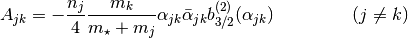
If ‘B’
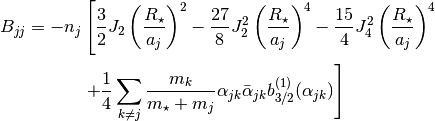
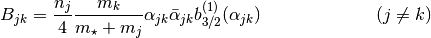
See also
-
get_eccentricity(h_arr, k_arr)¶ Calculates the eccentricity of all planets.
Parameters: - h_arr (numpy array) – The vertical component of the eccentricity of each planet.
- k_arr (numpy array) – The horizontal component of the eccentricity of each planet.
Returns: An array containing the values of the eccentricity at all times.
See also
-
get_inclination(p_arr, q_arr)¶ Calculates the inclination of all planets.
Parameters: - p_arr (numpy array) – The vertical component of the inclination of each planet.
- q_arr (numpy array) – The horizontal component of the inclination of each planet.
Returns: An array containing the values of the inclination at all times.
See also
-
get_property_all_planets(property_name)¶ Returns an array containing a specific property of all planets. The possible property names can be found in
planet().Parameters: property_name (str) – The name of the property. Returns: Array containing the specified property of each planet.
-
initial_conditions()¶ Calculates the initial values for the 4 equations of motion (h, k, p, and q) for each planet.
Returns:  (numpy array)
(numpy array) (numpy array)
(numpy array) (numpy array)
(numpy array) (numpy array)
(numpy array)